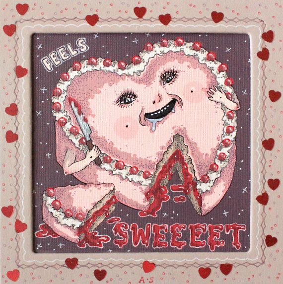

The purpose for this lab is to work with text elements to ehance our
website. With my partner as per usual, I created a lab10 folder containing
an index.html file, a css stylesheet, and an image folder. I will be building
up with my knowledge from the previous lab while adding new elements from
this one.
Challenges
Luckily, I did not have any problems with today's lab. I am honestly
super tired as I am writing this and am so glad to be done so I can fall
asleep; I should have done this earlier on but I pushed it off until tonight.
I am definitely not one hundred percent with everything, and a lot
of times I refer back to w3schools, but I think I am doing a satisfactory job
for not having any experience beforehand. There are things that I still feel
uncertain about but I honestly cannot think of anything off the top of my head
at this exact moment. Anyways, goodnight to me.
There is a certain beauty in setting the world on fire, and watching from
the center of the flames.
Until the lambs become lions.
The child who is not embraced by the village, will burn it down to feel
it's warmth.

Results
Viola, if everything has gone to plan which I know it has otherwise I would
not have published this to my official site, theeeeen you should be seeing
fonts that have not previously been used on any og my labs. Seeing as I typically
stick with Arial, I am sure that this is a welcome sight.